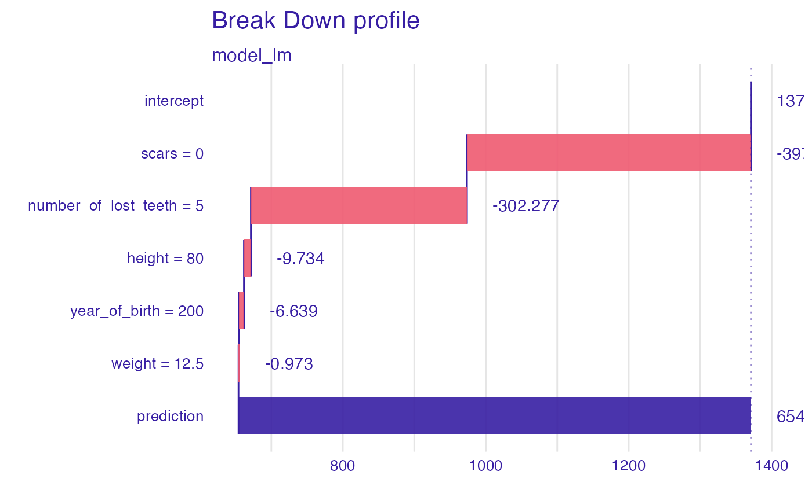
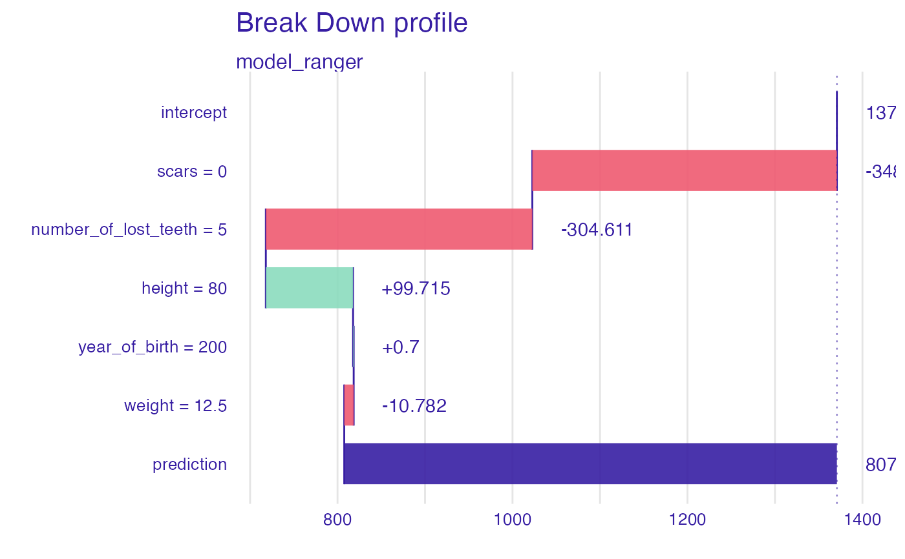

Instance Level Variable Attributions as Break Down, SHAP, aggregated SHAP or Oscillations explanations.
Model prediction is decomposed into parts that are attributed for particular variables.
From DALEX version 1.0 this function calls the break_down or
shap functions from the iBreakDown package or
ceteris_paribus from the ingredients package.
Find information how to use the break_down method here: https://ema.drwhy.ai/breakDown.html.
Find information how to use the shap method here: https://ema.drwhy.ai/shapley.html.
Find information how to use the oscillations method here: https://ema.drwhy.ai/ceterisParibusOscillations.html.
aSHAP method provides explanations for a set of observations based on SHAP.
predict_parts(
explainer,
new_observation,
...,
N = if (substr(type, 1, 4) == "osci") 500 else NULL,
type = "break_down"
)
predict_parts_oscillations(explainer, new_observation, ...)
predict_parts_oscillations_uni(
explainer,
new_observation,
variable_splits_type = "uniform",
...
)
predict_parts_oscillations_emp(
explainer,
new_observation,
variable_splits = NULL,
variables = colnames(explainer$data),
...
)
predict_parts_break_down(explainer, new_observation, ...)
predict_parts_break_down_interactions(explainer, new_observation, ...)
predict_parts_shap(explainer, new_observation, ...)
predict_parts_shap_aggregated(explainer, new_observation, ...)
variable_attribution(
explainer,
new_observation,
...,
N = if (substr(type, 1, 4) == "osci") 500 else NULL,
type = "break_down"
)a model to be explained, preprocessed by the explain function
a new observation for which predictions need to be explained
other parameters that will be passed to iBreakDown::break_down
the maximum number of observations used for calculation of attributions. By default NULL (use all) or 500 (for oscillations).
the type of variable attributions. Either shap, aggregated_shap, oscillations, oscillations_uni,
oscillations_emp, break_down or break_down_interactions.
how variable grids shall be calculated? Will be passed to ceteris_paribus.
named list of splits for variables. It is used by oscillations based measures. Will be passed to ceteris_paribus.
names of variables for which splits shall be calculated. Will be passed to ceteris_paribus.
Depending on the type there are different classes of the resulting object.
It's a data frame with calculated average response.
Explanatory Model Analysis. Explore, Explain, and Examine Predictive Models. https://ema.drwhy.ai/
library(DALEX)
new_dragon <- data.frame(
year_of_birth = 200,
height = 80,
weight = 12.5,
scars = 0,
number_of_lost_teeth = 5
)
model_lm <- lm(life_length ~ year_of_birth + height +
weight + scars + number_of_lost_teeth,
data = dragons)
explainer_lm <- explain(model_lm,
data = dragons,
y = dragons$year_of_birth,
label = "model_lm")
#> Preparation of a new explainer is initiated
#> -> model label : model_lm
#> -> data : 2000 rows 8 cols
#> -> target variable : 2000 values
#> -> predict function : yhat.lm will be used ( default )
#> -> predicted values : No value for predict function target column. ( default )
#> -> model_info : package stats , ver. 4.2.2 , task regression ( default )
#> -> predicted values : numerical, min = 541.1056 , mean = 1370.986 , max = 3928.189
#> -> residual function : difference between y and yhat ( default )
#> -> residuals : numerical, min = -5421.316 , mean = -1450.523 , max = 1176.912
#> A new explainer has been created!
bd_lm <- predict_parts_break_down(explainer_lm, new_observation = new_dragon)
head(bd_lm)
#> contribution
#> model_lm: intercept 1370.986
#> model_lm: scars = 0 -397.300
#> model_lm: number_of_lost_teeth = 5 -302.277
#> model_lm: height = 80 -9.734
#> model_lm: year_of_birth = 200 -6.639
#> model_lm: weight = 12.5 -0.973
plot(bd_lm)

# \donttest{
library("ranger")
model_ranger <- ranger(life_length ~ year_of_birth + height +
weight + scars + number_of_lost_teeth,
data = dragons, num.trees = 50)
explainer_ranger <- explain(model_ranger,
data = dragons,
y = dragons$year_of_birth,
label = "model_ranger")
#> Preparation of a new explainer is initiated
#> -> model label : model_ranger
#> -> data : 2000 rows 8 cols
#> -> target variable : 2000 values
#> -> predict function : yhat.ranger will be used ( default )
#> -> predicted values : No value for predict function target column. ( default )
#> -> model_info : package ranger , ver. 0.14.1 , task regression ( default )
#> -> predicted values : numerical, min = 585.2637 , mean = 1370.777 , max = 3390.243
#> -> residual function : difference between y and yhat ( default )
#> -> residuals : numerical, min = -4961.243 , mean = -1450.314 , max = 1052.711
#> A new explainer has been created!
bd_ranger <- predict_parts_break_down(explainer_ranger, new_observation = new_dragon)
head(bd_ranger)
#> contribution
#> model_ranger: intercept 1370.777
#> model_ranger: scars = 0 -348.130
#> model_ranger: number_of_lost_teeth = 5 -304.611
#> model_ranger: height = 80 99.715
#> model_ranger: year_of_birth = 200 0.700
#> model_ranger: weight = 12.5 -10.782
plot(bd_ranger)

# }